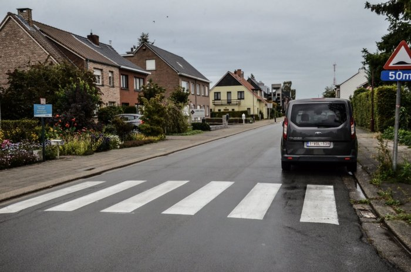

Staat de auto op de foto correct geparkeerd?

- Nee, voor én voorbij een zebrapad moet je minstens 5 meter ruimte laten.
- Nee, voorbij een zebrapad moet je minstens 5 meter ruimte laten.
- Ja, de verplichte afstand van 5 meter geldt alleen vóór het zebrapad, niet erachter.
Op de rijbaan mag je niet stilstaan of parkeren op een zebrapad. Dat verbod geldt ook op minder dan 5 meter voor het zebrapad. Voorbij het zebrapad mag je wel stilstaan en parkeren. Door vlak voor een zebrapad stil te staan of te parkeren, belemmer je het zicht van aankomende bestuurders op overstekende voetgangers en dat kan gevaarlijk zijn.